The complete guide to installing, operating and getting the most
out of your AutoMotor system — including the new built-in web control panel
that runs in any phone or laptop browser.
For home owners, operators and installation technicians
Municipal Water Auto StartTank Auto FillAdjustable Tank Levels5 Daily SchedulesWeb Control PanelMobile AppRun-Time StatisticsWater Session LogRemote Firmware UpdateOne-Tap RollbackData ExportWorks Without Internet
The BSR AutoMotor System is a smart, fully automated home water
management solution. It exists to take away the daily chore of running your water
motor by hand. Whether you are at home, at work or travelling, it watches your
municipal (government / tap) water supply and your overhead or underground tank,
and runs the pump automatically — exactly when it is needed, and never when it
is not.
You set it up once, and the system takes care of the rest. It turns the motor
ON when water is available or the tank is low, and OFF when the tank
is full or the supply stops. On top of that you can see and control everything from
your phone — either through the mobile app, or by simply opening the controller's
own web page in a browser, with no app to install at all.
1.1 The Problem It Solves
Common problem
How BSR AutoMotor fixes it
Forgetting to turn ON the motor when municipal water arrives
The system detects water flow on its own and starts the motor within seconds
Forgetting to turn OFF the motor — the tank overflows
Tank level is monitored continuously; the motor stops the moment the tank is full
Motor running dry, or running when the tank is already full
Both the supply line and the tank level are checked before the motor is allowed to run
Water wasted through overflow
Automatic shut-off at the right level prevents overflow completely
No way to control the motor when away from home
Full remote control from the mobile app, from anywhere in the world
No way to know if water has arrived or the tank is full while you sleep
Distinct buzzer alerts at the motor and at the tank tell you exactly what happened
A fixed routine that cannot be adjusted
Up to five programmable schedules, plus thresholds you can tune yourself
Power cuts wiping out all settings
Every setting lives in permanent memory and is restored automatically
No record of how much water you actually received
Every supply session is measured in litres and logged, and can be downloaded as a file
No idea how long the motor has been running this month
Run time is totalled for every day of the last 31 days, split by what started the motor
1.2 System Components at a Glance
Component
Where it is installed
What it does
Host Controller
Near the motor / electrical panel
The brain of the system. Switches the motor, reads the flow sensor, keeps the clock,
talks to the Sensor Node, serves the web control panel, and syncs with the cloud.
Sensor Node
Above or beside the water tank
Measures how full the tank is using a waterproof ultrasonic probe and reports the
reading to the Host Controller every 5 seconds. Has its own buzzer.
Wi-Fi Extender
Between the controller and the tank
Repeats the Host Controller's own Wi-Fi network so the Sensor Node and your phone
stay connected even when the tank is far from the motor.
Web Control Panel
Built into the Host Controller
A complete control page served by the controller itself. Opens in any browser on the
same Wi-Fi. Nothing to install, and it works with no internet at all.
Mobile Application
Your Android smartphone
Live status, motor control, schedules and alerts — at home on local Wi-Fi, or from
anywhere in the world over the internet.
Secure Cloud Service
The internet
Relays commands and status between your device and your phone when you are away from
home, so the app keeps working on any connection.
1.3 What Is New in This Edition
If you are upgrading from an earlier AutoMotor release, everything you already
know still works exactly as before. These capabilities have been added on top:
New capability
What it means for you
Built-in web control panel
The controller now serves its own control page. Open a browser on the same Wi-Fi
and you get the full system — no app install, no internet, no account.
Covered in detail in Section 5.
Adjustable tank start / stop levels
The "tank is low" and "tank is full" marks are no longer fixed. Set them to suit
your tank and your habits.
Adjustable water detection sensitivity
Tune how much flow counts as "municipal water has arrived", so a weak supply is
still detected and a dripping line is not.
Motor run-time statistics
A daily bar chart for the last 31 days, with every day's run time split by what
started the motor — schedule, municipal water, tank, app, web page or switch.
Municipal water session log
The last ten supply sessions, each with its start time, end time, duration and
the litres collected.
Last run & next run
See at a glance what started the motor last, when, and when the next schedule
is due to fire.
Restart history
A dated list of why the device last restarted — power on, brownout, update —
with lifetime totals for each reason.
Remote silence for the tank buzzer
The buzzer on the roof can now be acknowledged from the control panel. It re-arms
itself automatically, so it can never be left permanently disarmed.
Two firmware copies & one-tap rollback
An update is written into a spare slot, so the previous version stays in the device
and can be restored instantly if anything looks wrong.
Local firmware upload
A technician can flash the device directly over Wi-Fi from a laptop with no
internet connection at all.
Data download
Save the full run-time and water-session history to your phone as a plain text file.
Erase data & factory reset
Clear the history without touching your settings, or reset the whole device to
as-new condition.
A note on connectivity. Internet is optional, not required.
Every automation in this manual — municipal water auto start, tank auto fill, schedules,
buzzer alerts and the entire web control panel — runs entirely inside the Host Controller.
The internet connection only adds remote access from outside your home.
2. Host Controller — The Brain of the System
Installed at: near the water motor or the electrical panel. Role: the Host Controller is the central unit. It reads the flow sensor, switches the
motor, talks to the Sensor Node, keeps the clock, enforces every automation rule, manages
your schedules, raises the alerts, serves the web control panel to your browser, and syncs
with the cloud when internet is enabled.
2.1 Municipal Water Auto Start Improved
Purpose: automatically starts the motor the moment municipal
(tap) water arrives in your supply pipe — so you never miss a drop of incoming water.
In most homes municipal water does not arrive at a fixed time. This feature watches the
supply pipe continuously with a flow sensor. The instant water starts moving, the system
recognises it and turns the motor ON to pump that water into your tank.
The flow sensor counts pulses from the pipe. Once the flow rate reaches the
detection threshold — 0.5 litres per minute by default — the system confirms
that municipal water has arrived.
As a second check, a minimum volume must be collected within a two-minute
rolling window (100 ml by default). This prevents a brief pressure surge or a dripping
tap from being mistaken for a real supply.
The motor starts automatically within seconds of detection. No action is needed from you.
A 3-minute minimum run time is enforced: the motor will not switch off for at
least three minutes after starting. This stops false cut-outs caused by short
fluctuations in flow.
After that, the motor stops automatically when flow falls below the cut-off
threshold (0.4 litres per minute by default), confirming the supply has ended.
Every session records the total quantity of water pumped in litres, so you always
know how much water each supply actually delivered.
Both thresholds and the confirmation volume are adjustable — see section 2.7.
Auto Start can be switched on or off at any time from the web panel or the mobile app.
The setting is saved permanently and is restored automatically after a power cut.
Note. Auto Start will not fire if you have already turned the
motor on yourself with Direct Motor Control. This prevents the motor being double-triggered.
Note. If the motor is already running under Direct Control when
municipal water arrives, the system still sounds the buzzer so you know water has come — but it
leaves the motor state alone.
2.2 Tank Auto Fill — Automatic Level Control
Purpose: keeps your tank topped up automatically by watching its
level and running the motor when it drops — so you never run out of water at home.
In this mode the controller works together with the Sensor Node mounted above your tank.
The node measures the level every five seconds and reports it. Based on that reading, the
controller decides whether the motor should run.
The motor turns ON automatically when the tank level falls to the start
level or below — 50% by default.
The motor turns OFF automatically when the level reaches the stop level
or above — 87% by default.
Both levels are adjustable from the web control panel (section 2.3).
The smart anti-chatter (hysteresis) system
Switching on and off at a single fixed level would make the motor flick on and off
repeatedly as the water surface moves around that level. To prevent this, the system uses a
layered decision instead:
Level reading
Decision
Reason
At or above the stop level
Tank full → motor OFF
The tank is full. There is nothing to pump.
Just below the stop level, when the tank was already marked full
Still treated as full → motor stays OFF
A small dead band that stops the motor restarting the instant it switched off.
Between the start and stop levels, motor not running
Treated as full → motor stays OFF
There is enough water. No action needed yet.
At or below the start level
Tank not full → motor ON
The tank is running low. Start refilling.
Below the stop level while the motor is already running
Tank not full → motor stays ON
Keep filling until it is genuinely full. Do not stop halfway.
Tip. This anti-chatter behaviour protects your motor from rapid
repeated switching, which causes real wear and shortens motor life.
If the Sensor Node stops reporting for more than 2 minutes — for example a power
cut at the tank — the controller treats the tank as full as a safety measure and stops
the motor. A buzzer alert sounds immediately at the controller.
The web panel also shows how old the tank reading is, so a stale number can never
be mistaken for a live one.
Tank Auto Fill is saved permanently and resumes automatically after a power cut.
Blocked. Tank Auto Fill cannot be switched on while the motor
is already running under Municipal Water Auto Start or Direct Motor Control. This prevents two
automations fighting over the same motor.
2.3 Adjustable Tank Start / Stop Levels New
Purpose: lets you decide how empty the tank must get before the
motor starts, and how full it must be before the motor stops.
The start level (default 50%) is the point at which the tank counts as low.
Raise it if you would rather the tank was always kept near full; lower it if you prefer
fewer, longer runs.
The stop level (default 87%) is the point at which the tank counts as full.
The two levels must be at least five percentage points apart, so the automation always
has a sensible band to work in.
Both are set from the Tank Levels card in the web control panel and are saved
permanently in the device.
Why the stop level is capped at 87%. The ultrasonic probe sits
above the full mark and, like all ultrasonic sensors, cannot measure anything closer than about
20–25 cm. Once the water rises past roughly 88%, the surface is inside the probe's blind zone
and it stops returning a usable reading. A stop level set higher than that could never be
reached — the motor would simply keep running until the tank overflowed. The system therefore
refuses any value above 87%. See section 4.6 for how to raise this ceiling by remounting
the probe higher.
2.4 Direct Motor Control
Purpose: gives you immediate manual control of the motor,
overriding the automatic modes whenever you need to.
Sometimes you simply want the motor to run — to clean the tank, to test the installation,
or to deal with something unusual. Direct Motor Control does exactly that, from the web panel
or the mobile app.
Turn the motor ON or OFF instantly. Works on local Wi-Fi and remotely over the internet.
When you turn the motor ON manually, Tank Auto Fill is switched off automatically to
avoid a conflict.
When you turn the motor OFF manually, all automatic flags are cleared — Auto
Start, Tank Auto Fill and municipal water tracking all reset cleanly.
The motor state is saved permanently. If power fails while the motor is running, the
motor resumes when power returns.
A short buzzer beep confirms every manual ON and OFF.
The system records that you started this run, so it shows up correctly in the
run-time statistics and in the last-run record.
Blocked. A manual motor ON is refused if Municipal Water Auto
Start has already detected water and started the motor, to prevent a double-trigger conflict.
The panel tells you why.
2.5 Timer-Based Motor Scheduling
Purpose: runs the motor at a chosen time of day automatically —
ideal where the municipal supply is predictable.
Up to five independent schedules can be active at once.
Each schedule sets a start time (hour, minute, second), a duration in
minutes, and whether it repeats daily or runs just once.
If you set a time that has already passed today, the system automatically moves it to
the same time tomorrow.
Repeating schedules roll forward by 24 hours after each run, so they keep going day
after day with no further action from you.
One-time schedules are cleared from memory automatically once they have run.
All schedules survive a power cut.
Schedules can be viewed, edited and deleted from the web panel and the mobile app.
Deleting all schedules immediately stops any scheduled run that is in progress.
The panel also shows you when the next schedule is due (section 5.10).
Blocked. Schedules will not run until the clock has been set.
The panel shows a "clock must be set first" reminder in this case.
Blocked. A schedule will not take over the motor while
Municipal Water Auto Start or Tank Auto Fill is actively running it. It is simply re-evaluated
on the next cycle.
2.6 Flow Sensor & Water Quantity Measurement
Purpose: measures exactly how many litres of municipal water each
supply session delivers — so you have a real picture of what you receive.
A pulse-type water flow sensor is fitted to the pipe between the municipal supply and
the motor.
Each pulse represents a precisely calibrated volume of water.
Pulses are counted continuously and converted into a live flow rate in litres per
minute and a running total volume.
The total is displayed live on the web panel and in the mobile app, and is pushed to the
cloud when internet is enabled.
The total resets to zero at the start of each new municipal supply session.
Totals are written to permanent memory, so a restart mid-session does not lose the
measurement.
2.7 Adjustable Municipal Water Detection New
Purpose: lets you tune how sensitive the system is to incoming
water, so it suits your own supply pressure.
Every supply line behaves differently. A high-pressure connection surges; a weak one
trickles. Three settings on the web panel let you match the system to yours:
Setting
Default
What it does
Flow rate to detect water
0.5 L/min
How much flow counts as "water has arrived". Lower it if a weak supply is being
missed; raise it if the system reacts to a trickle that is not a real supply.
Flow rate to cut motor off
0.4 L/min
How little flow counts as "the supply has stopped". Should always be set below the
detection value, so the system does not oscillate between the two.
Volume to confirm supply
100 ml
How much water must actually be collected within a two-minute window before the
system accepts that a genuine supply is running.
Tip. Leave these at their defaults unless you have an actual
problem. If the motor sometimes starts when no real water has arrived, raise the detection
rate or the confirmation volume. If a genuine supply is being missed, lower the detection rate.
2.8 Municipal Water Session Log New
Purpose: keeps a record of your recent municipal water supplies,
so you can see when water came and how much you got.
The last ten supply sessions are stored in the device, newest first.
Each entry shows the date and time water arrived, the time it stopped, how long the
supply lasted, and the litres collected.
A session that is still running is marked "still flowing" and its duration and
volume update live.
Very short bursts are deliberately ignored, so a pipe simply pressurising does not
clutter the log with meaningless one-second entries.
An in-progress session is checkpointed to permanent memory regularly, so a power cut
costs at most a few minutes of the record rather than the whole session.
The log can be downloaded as a text file (section 2.20).
2.9 Motor Run-Time Statistics New
Purpose: tells you exactly how long your motor has been running,
day by day, and what caused each run.
Run time is totalled for every day of the last 31 days and kept in the device.
Totals can be viewed for today, the last 7 days or the last 30 days.
Every total is split by what started the motor: mobile app, web page, schedule,
municipal water, tank auto-fill, or the physical switch.
A daily bar chart shows the pattern at a glance; tapping any bar breaks that single
day down by source.
Days are split at your local midnight, so the figures line up with real calendar days.
A run in progress is included in the totals as it happens.
Why this matters. Run time is the single best indicator of both
your electricity use and your motor's wear. A month where "Tank auto-fill" suddenly dominates
usually means a leak or a tap left open somewhere.
2.10 Last Run & Next Run Record New
Purpose: answers the two questions people actually ask — "why did
the motor run?" and "when will it run next?"
Last started by — which of the six sources started the most recent run.
Last started at — the exact date and time it began.
Next schedule — when the next stored schedule is due to fire, including
repeating schedules rolled forward to tomorrow.
All three survive power cuts.
2.11 Smart Buzzer Alert System
Purpose: keeps whoever is near the motor informed about important
events, without needing to look at a phone.
The Host Controller has a built-in buzzer that uses different sound patterns for different
events. This is genuinely useful when you are near the motor room and want to know what the
system is doing without opening anything.
Pattern
Sound
Triggered by
Meaning
Continuous
One long steady beep
Municipal water arrived in Tank mode; Sensor Node disconnected; schedule completed;
schedules deleted; device start-up
Something important happened. Check the panel or the app.
Fast beep
Rapid short beeps
Motor started by Tank Auto Fill
The motor is starting because the tank is low.
Beep-beep-pause
Two beeps, pause, repeat
Wi-Fi connection lost; weak Wi-Fi signal detected
Warning — a network or internet problem.
Medium alternating
Evenly paced on / off beeps
Municipal water detected by Auto Start; direct motor ON / OFF command
The motor has just been turned on or off.
Silent
—
System idle, everything normal
All is well. No action needed.
Each alert has a maximum duration — around a second for simple confirmations, and up
to a few minutes for a water-arrival alert that is meant to wake you.
Buzzer mute. The controller's buzzer can be switched off entirely from the
Device Buzzer tile on the web panel. While muted, no alert will sound. The setting
is saved and survives a power cut, so remember to switch it back on.
Stop Buzzer silences an alert that is sounding right now without disabling future
alerts.
Special case: if the motor is already running under Direct Control when municipal water
arrives, the buzzer still sounds to notify you, even though the motor state does not
change.
2.12 Silencing the Tank Buzzer from Anywhere New
Purpose: lets you acknowledge the buzzer on the roof from your
phone, instead of climbing up to it.
The Sensor Node has its own buzzer, out at the tank, where nobody can conveniently reach
it. It sounds whenever the tank level leaves the safe band. You can now silence it from the
control panel:
While the tank buzzer is actually sounding, a red banner appears at the top of the
web panel carrying a single Stop Buzzer button.
The same command is always available as Stop Tank Buzzer under Controls.
The buzzer goes quiet within about five seconds of the tap.
The tank buzzer and the controller's own buzzer are silenced separately, so quieting
one never hides an alert from the other.
This is an acknowledgement, not a permanent setting. As soon as
the tank level returns to the normal range, the silence is cleared automatically and the buzzer
re-arms itself, ready for the next alarm. A mute that outlived its alarm would leave the roof
buzzer disarmed for good after one press — and nobody would notice until the tank overflowed.
As a second safeguard, the Sensor Node re-arms its own buzzer if the controller stops
confirming the silence for ten minutes: an alarm nobody can hear is worse than one nobody can
silence.
2.13 Built-in Real-Time Clock
Purpose: keeps accurate date and time inside the device so
schedules always run at the right moment — even after a power cut.
A dedicated hardware clock module with its own backup battery keeps time running while
the mains power is off.
The clock drives the schedule system and date-stamps every record the device keeps.
The same module measures the ambient temperature to within a quarter of a degree, shown
on the panel and in the app.
When internet is enabled, the clock synchronises itself with global internet time
servers automatically.
You can also set it by hand from the web panel or the mobile app — useful on first
setup or if it ever drifts.
2.14 Internet & Cloud Connectivity
Purpose: connects your system to the internet so you can monitor
and control it from anywhere in the world.
When Remote / IoT mode is on, the Host Controller joins your home Wi-Fi router and
communicates securely with a cloud service that relays commands and status between the device
and your mobile app.
Live status is uploaded every few seconds: motor state, tank level, water flow status,
temperature, total water pumped and more.
Commands from the app — motor on, motor off, set a schedule, change a mode — are
delivered to the device and carried out in real time.
Works whether your phone is on your home Wi-Fi or on mobile data anywhere in the world.
All communication is authenticated. Only your own authorised account can send commands
to your device.
Remote mode can be turned on or off at any time. With it off, the system runs entirely
on its own local Wi-Fi and every automation continues exactly as normal.
Privacy and security. All connection credentials are held
securely inside the device and are never shown to users or exposed in the app or the web panel.
2.15 Smart Wi-Fi Management
Purpose: keeps the system connected and recovers from network
problems on its own, with no manual intervention.
The Host Controller always runs its own local Wi-Fi network, so the Sensor Node,
the web panel and the mobile app have a working local connection even with no internet
and no router.
When Remote mode is on, the controller also joins your home router. Both
connections run at the same time.
Signal strength to the router is checked every few seconds. If it becomes too weak, a
buzzer warning sounds and the system waits briefly for it to recover.
If it does not recover, the controller disconnects cleanly from the router and falls
back to local-only operation.
If the router connection drops unexpectedly, reconnection is retried automatically for
about a minute before falling back to local-only mode.
When the router connection is restored, the system restarts itself to re-establish the
cloud link and re-sync the clock.
Tip. Even with no internet at all, every automation keeps
working — Auto Start, Tank Auto Fill, schedules, alerts, and the complete web control panel.
Internet is only needed for remote access from outside your home.
2.16 Firmware Updates — Three Ways Improved
Purpose: keeps your system current with new features and
improvements, with a method to suit every situation.
Method
Needs
How it works
Cloud update (web panel or app)
Internet on the device
Tap Check For Update. The device asks the update service whether a newer
version exists and answers yes or no. If yes, tap Update & Reboot — the
device downloads, installs and restarts itself. Typically 1–3 minutes.
Local uploadNew
Only the local Wi-Fi
A technician selects a prepared firmware file on a phone or laptop and uploads it
straight to the device over Wi-Fi, with a live progress bar. No internet needed
anywhere.
Remote / cloud-triggered
Internet on the device
An update can be initiated through the cloud with no physical access to the device
at all — useful for a service visit that does not need a visit.
During an update. Do not cut power to the device while an update
is in progress. If an update is interrupted, the device falls back to its previous firmware
copy automatically — see the next section.
2.17 Two Firmware Copies & One-Tap Rollback New
Purpose: makes updating safe. If a new version ever misbehaves,
the previous one is still in the device and can be restored instantly.
The device holds two firmware copies. An update is always written into the spare
copy, so the version you were running stays intact.
After an update the device runs the new copy. If it fails to come up and check in
correctly, it reverts to the previous copy automatically.
You can also roll back deliberately, at any time, with a single button on the web panel
— no download and no internet required, because the older copy is already in the device.
The panel shows which copy is running now and which is held in reserve, each with its
version number and build date.
Only one step back is kept. The next update overwrites the older copy.
A factory reset does not erase either firmware copy, so rollback still works
afterwards.
2.18 Permanent Settings Memory (Power-Cut Safe)
Purpose: nothing you configure is ever lost when the power goes off.
Every setting is written to permanent memory inside the device the moment you change it.
After a power cut the device restores: Municipal Water Auto Start on/off; the motor state
(if it was running, it resumes); Tank Auto Fill on/off; all five schedules; tank start and
stop levels; water detection sensitivity; buzzer mute; Remote/IoT mode on/off; the water
quantity counter; the water session log; run-time statistics; restart history; and the
last-run record.
You never need to reconfigure anything after an outage. The system picks up exactly where
it left off.
2.19 Health Monitoring & Restart History Improved
Purpose: records why the device restarted, so problems can be
diagnosed quickly instead of guessed at.
Every restart is recorded with its date, time and cause — normal power on, a software
update, a power brownout (a voltage dip), a hardware fault, and others.
The last sixteen restarts are kept, newest first, and shown on the web panel.
Lifetime totals per cause are kept separately, so you can see, for example,
"Power on × 9, Brownout × 2" even after the detailed list has rolled over.
Health information is also uploaded to the cloud when internet is enabled, so the
history can be reviewed from the app.
Device uptime — how long since the last restart — is shown on the panel at all times.
What to look for. Repeated Brownout entries mean the supply
voltage at the device is dipping, usually when the motor starts. That is worth showing to an
electrician. Repeated Power on entries simply mean mains outages.
2.20 Data Export, Erase and Factory Reset New
Purpose: gives you control over the information the device has
collected — to keep it, clear it, or start completely fresh.
Action
What it does
What it does not touch
Download Data
Saves the daily motor run time for every day still held in the device and all kept
municipal water sessions as a plain text file on your phone or laptop.
Nothing is erased. Purely a copy.
Erase Stored Data
Deletes the water sessions, restart history, run-time statistics and last-run
record, and restores detection sensitivity and the buzzer setting to defaults.
Your schedules and tank levels are kept.
Factory Reset
Erases everything the device has saved — schedules, tank and auto-start
modes, water totals and all history. The device restarts as if brand new.
Both firmware copies are kept, so rollback still works.
Both erase actions ask you to confirm before anything is deleted, and
neither can be undone. Download your data first if you want to keep it.
3. Physical Controls on the Host Unit
Besides the web panel and the mobile app, the Host Controller has physical
inputs on the unit itself. This lets an operator standing at the motor act immediately, with no
phone in hand.
3.1 Tank Mode Rocker Switch
Purpose: lets the operator at the motor enable or disable automatic
tank filling without opening anything.
A rocker switch is mounted on the Host Controller unit. It directly controls whether Tank
Auto Fill is active.
Switch position
State
Effect
Pressed / closed
Tank mode ON
Tank level monitoring starts. If the tank is at or below the start level, the motor
turns on automatically.
Released / open
Tank mode OFF
Tank level monitoring stops. If the motor was running because of tank mode, it
stops immediately.
The switch is read every second, so a change takes effect at once.
Its setting is saved to permanent memory and is remembered after a power cut.
The state is mirrored on the web panel and in the app, so the switch and the software
always agree.
A run started this way is recorded as started by the physical switch, so it shows
up correctly in the run-time statistics.
Blocked. The rocker switch is ignored while the motor is already
running under Municipal Water Auto Start or Direct Motor Control. It takes effect only in
neutral conditions.
3.2 Flow Sensor (Automatic Input)
Purpose: detects the presence and rate of water in the supply pipe
— the core sensor behind Municipal Water Auto Start.
The flow sensor is plumbed into the incoming water pipe and produces electrical pulses
as water passes through it.
The system counts these pulses every second to calculate flow rate and to decide whether
municipal water is present.
No manual action is ever needed — it works entirely automatically and feeds both the
Auto Start logic and the litre measurement.
3.3 Temperature Sensor (Built In)
Purpose: provides an ambient temperature reading from inside the
controller unit.
The clock module includes a temperature sensor accurate to about a quarter of a degree.
The reading is refreshed every second, shown live on the web panel and in the app, and
uploaded to the cloud when internet is enabled.
It is a useful rough indicator of how hot your electrical panel or motor room is getting.
4. Sensor Node — The Tank Level Monitor
Installed at: above or beside the water tank, overhead or
underground. Role: a compact, independent unit that measures the water level in your tank and reports
it to the Host Controller every five seconds. Without the Sensor Node, Tank Auto Fill cannot
work.
4.1 Ultrasonic Water Level Sensing
Purpose: measures the level inside your tank without ever touching
the water, using sound.
The Sensor Node uses a waterproof ultrasonic probe mounted above the tank. It sends a sound
pulse downward and times the echo coming back off the water surface. That time gives the
distance to the water, which is converted into a level percentage.
Tank depth and the probe's mounting height above the full mark are both configured to
match your actual tank, and the offset is accounted for automatically.
Level % = (tank depth − distance down to the water surface) ÷ tank depth × 100
For a stable reading, five measurements are taken every cycle and the middle
(median) value is used, which rejects noise and false reflections off the tank walls.
If no usable echo comes back — a blocked or disconnected probe, or heavy foam — the
reading is flagged rather than reported as though it were real, and the previous figure is
clearly marked as held over.
The web panel shows how old the reading is, so a stale value can never be mistaken for
a live one.
Tip. The ultrasonic probe works with any water — clean, dirty or
coloured — as long as the surface is in clear line of sight and nothing obstructs the space
between the probe and the water.
4.2 Automatic Reporting to the Host Controller
Purpose: keeps the Host Controller continuously supplied with tank
data so it can make real decisions about the motor.
Every 5 seconds the node measures the level and sends it to the Host Controller
over the local Wi-Fi link.
Each report carries the level percentage, the raw distance reading, whether the reading
is fresh or held over, and whether the tank is currently in an alarm condition.
If Wi-Fi drops, the node retries the connection by itself and resumes reporting as soon
as it is back.
The onboard LED blinks briefly on each successful report — a quick visual confirmation
that the unit is alive and talking.
4.3 Local Tank Buzzer Alerts
Purpose: gives an audible warning right at the tank when the level
is critically low or nearly full.
Condition
Buzzer
What it means
Level below 20%
Short beep every second
The tank is critically low. The motor should be running soon.
Level above 88%
Long beep every second
The tank is almost full. The motor should be stopping soon.
Level between 20% and 88%
Silent
Normal operating range. No alert needed.
Start-up complete
Two short beeps
The Sensor Node has booted and connected to the Host Controller.
Who decides the alarm. The alarm band belongs to the Sensor Node,
because it is a property of where that particular probe is mounted. The Host Controller reads
the node's verdict rather than working it out again from its own numbers — which means there is
only ever one set of limits, and it cannot drift out of step.
4.4 Remote Buzzer Silence
Purpose: lets you acknowledge the tank buzzer from the control
panel instead of going up to the tank.
Full details are in section 2.12. In short: while the tank buzzer is sounding, a red banner
appears at the top of the web panel with a single Stop Buzzer button, and the same
command is always available as Stop Tank Buzzer under Controls. The buzzer goes quiet
within about five seconds, and re-arms itself automatically once the tank level returns to
normal.
4.5 Wi-Fi Communication & Firmware Update
Purpose: connects the Sensor Node to the Host Controller reliably
over the longest possible distance, and allows its software to be updated wirelessly.
The node joins the Host Controller's own local Wi-Fi network automatically on start-up.
The link is deliberately configured for maximum range rather than maximum speed:
full transmit power, the longest-reaching Wi-Fi mode, and power-saving sleep disabled so
no report is ever missed. The node is usually on a roof, far from the controller.
If the connection drops it reconnects by itself, with no intervention.
LED indicator: lit = Wi-Fi disconnected or error; off = connected and working;
quick blink = a reading was just sent successfully.
Firmware update: for the first 5 minutes after every restart, the Sensor
Node accepts a wireless software update from a browser on the same network. After five
minutes that window closes automatically and the node devotes itself entirely to
measuring and reporting.
Why the update window closes. Keeping an update service running
permanently on a device nobody can physically reach would be a standing risk. A short window
that opens only when someone deliberately restarts the node gives easy maintenance without
leaving that door open.
4.6 Mounting the Probe Correctly
Purpose: getting this right is the single biggest factor in how
accurate your tank readings will be.
Every ultrasonic probe has a blind zone — a minimum distance below which it cannot
measure at all. On the probe used here that is roughly 20–25 cm. If the probe is mounted only a
little above the full mark, the water surface enters that blind zone while the tank is still
filling, and the top of the tank is effectively unmeasurable.
Water level
Distance the probe sees
Result
100% (full)
≈ 12 cm
Inside the blind zone — no reading
94%
≈ 17 cm
Inside the blind zone — no reading
88%
≈ 22 cm
Marginal
20%
≈ 78 cm
Reliable
Recommendation for installers. Mount the probe at least
25 cm above the tank's full mark and set the mounting offset to match. Done that way,
the whole usable range of the tank is genuinely measured and the stop level can be set higher
with confidence. With a shorter offset, treat "full" as an inference rather than a measurement
— which is precisely why the system caps the stop level at 87% by default.
5. The Web Control Panel
The Host Controller serves its own complete control page. Open a browser on
any phone, tablet or laptop connected to the system's Wi-Fi and the whole system is in front of
you — live status, motor control, schedules, settings, history and firmware management.
There is nothing to install, no account to create and no internet connection required.
The screenshots in this section are of the actual panel.
5.1 Opening the Panel
On your phone or laptop, open Wi-Fi settings and connect to the Host Controller's own
network, named ESP32-WROOM. The password is supplied with your installation.
Open any web browser and go to http://192.168.4.1
The panel loads and begins showing live readings immediately.
The panel is designed phone-first: the motor state, the power button and the mode tiles
all fit on one screen on a typical phone, with no scrolling needed for day-to-day use.
Everything below that is grouped into collapsible sections. Tap a section heading to open
or close it, or use Expand all to open everything at once.
The header carries a connection indicator — a green dot while the device is responding,
red if it is not.
The first time you open the panel it asks you to tap once to enable the municipal-water
alert sound. Browsers require that one tap before any page is allowed to play audio.
Tip. Add the page to your phone's home screen. It then opens like
an app, full-screen, straight to the motor controls.
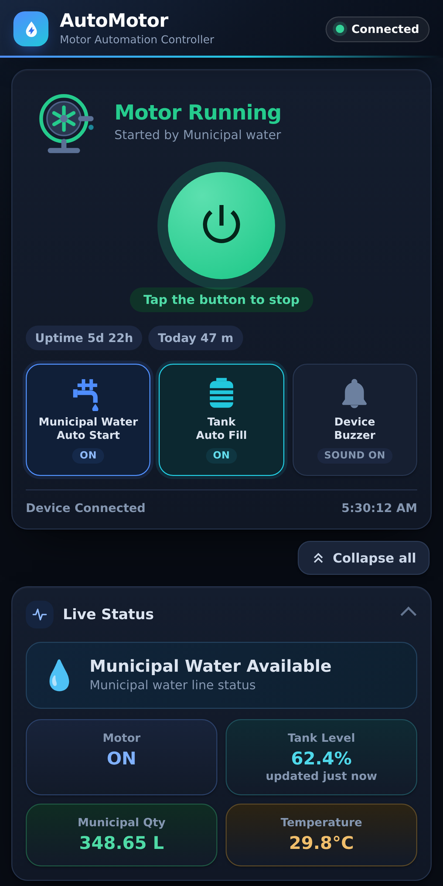
Figure 5.1 — The panel as it opens: connection state in the header, the motor
card, and the collapsible sections below.
5.2 The Motor Card
Purpose: the one screen that answers "what is my motor doing, and
how do I change it".
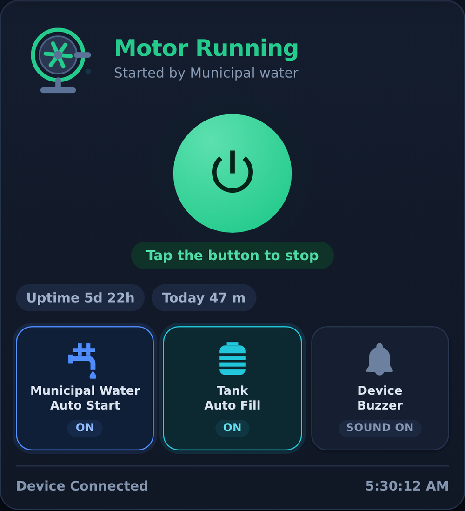
Figure 5.2 — The motor card. Green means the motor is running; the subtitle names
what started it.
Element
What it shows / does
Animated motor graphic
The impeller spins while the motor is running, so the state is obvious at a glance
even across a room.
Motor Running / Motor Off
The current state, with a subtitle naming what started this run — for example
"Started by Municipal water".
Power button
One tap starts or stops the motor. You are asked to confirm before anything
switches, so a mis-tap cannot start your pump.
Uptime
How long since the device last restarted.
Today
How long the motor has run so far today, across all sources.
Municipal Water Auto Start tile
Tap to turn automatic starting on incoming water on or off. Shows ON or OFF.
Tank Auto Fill tile
Tap to turn automatic tank level control on or off. Shows ON or OFF.
Device Buzzer tile
Tap to mute or un-mute the controller's own buzzer. Shows SOUND ON or MUTED.
Footer line
Connection status on the left, the time of the last successful reading on the right.
If a request is refused. When a mode conflict blocks an action —
for example turning the motor on manually while Auto Start is already running it — the panel
says so in plain language directly under the button, rather than silently doing nothing. The
full set of rules is in section 8.2.
5.3 Live Status
Purpose: the complete real-time picture of your water system in one
place.
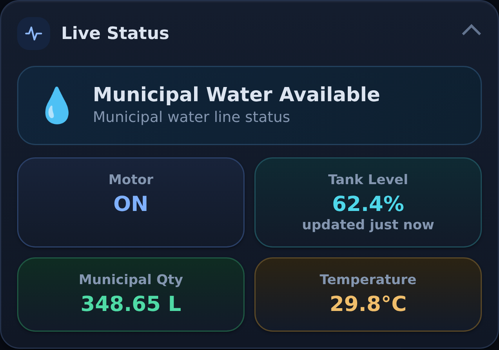
Figure 5.3 — Live Status. The banner reports the municipal supply; the four tiles
carry the key readings.
Reading
Shows
Why it matters
Municipal water banner
Available / not available
Whether government water is flowing in your pipe right now.
Motor
ON or OFF
Whether your motor is running at this moment.
Tank Level
Percentage, to one decimal place, with the age of the reading
Exactly how full your tank is — and how fresh that figure is. "Updated just now"
means the Sensor Node is reporting normally.
Municipal Qty
Litres in the current session
How much water this supply has delivered so far.
Temperature
°C at the controller
How hot the motor panel environment is getting.
Tip. If the tank level says "no reading yet" or shows an age of
several minutes, the Sensor Node is not reaching the controller. Start with section 10,
Troubleshooting.
5.4 Controls
Purpose: the occasional actions that do not belong on the main
motor card.
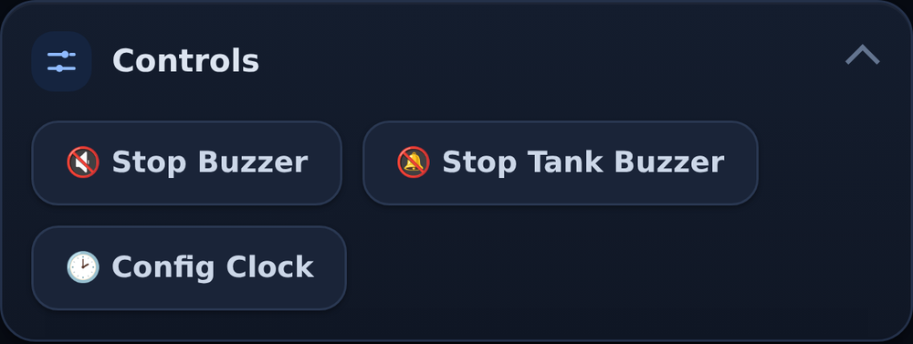
Figure 5.4 — Controls.
Button
What it does
Stop Buzzer
Silences an alert sounding at the controller right now. Future alerts still sound.
Stop Tank Buzzer
Silences the buzzer out at the Sensor Node. Takes effect within about five seconds
and re-arms automatically once the tank level is normal again.
Config Clock
Opens a date-and-time box so you can set the device clock by hand. Needed before
schedules will run, unless the device has already synced from the internet.
5.5 Schedules
Purpose: set, review and clear the five daily motor schedules.
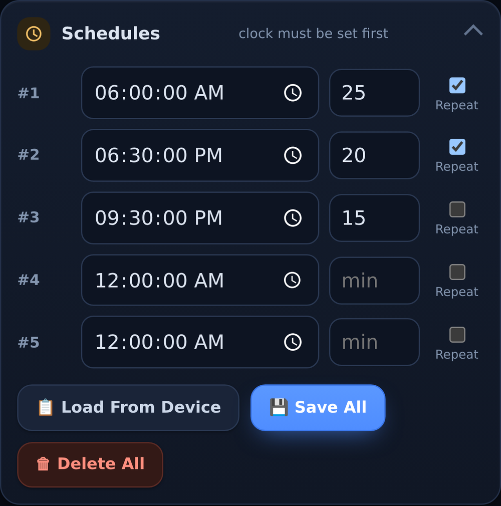
Figure 5.5 — Schedules. Two repeating daily runs and one that fires only once.
Field / button
What it does
Slots #1 to #5
Five independent schedules. Leave a slot blank to
disable it.
Time
The start time, to the second.
min
How many minutes the motor should run for.
Repeat
Ticked = runs every day at that time. Unticked = runs once,
then clears itself.
Load From Device
Fetches the schedules currently stored in the
controller, so you can see and edit exactly what is really set.
Save All
Writes all five slots to the device permanently.
Delete All
Clears every schedule. Any scheduled run in progress stops
at once. You are asked to confirm first.
Set the clock first. The section header carries the reminder
"clock must be set first" for good reason — schedules are refused until the device knows the
real time, because an unset clock would run your motor at the wrong hour.
5.6 Remote / IoT Mode
Purpose: one switch that controls whether the device connects to
the internet for remote access.
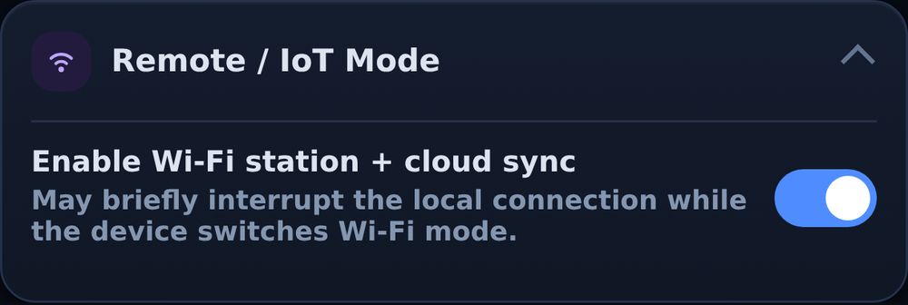
Figure 5.6 — Remote / IoT mode.
Position
Effect
On
The controller joins your home router, syncs its clock from the internet, connects
to the cloud service, and remote control from the mobile app becomes available
anywhere in the world.
Off
The controller disconnects from the router and runs on its own local Wi-Fi only.
All automation continues unchanged. Remote app control is unavailable, but local
control on the same Wi-Fi keeps working normally.
Expect a brief interruption. Switching this setting makes the
device change Wi-Fi mode, so the panel may lose contact for a few seconds and then reconnect
by itself. That is normal.
5.7 Firmware — Cloud Update
Purpose: updates the device over the internet, in two taps.
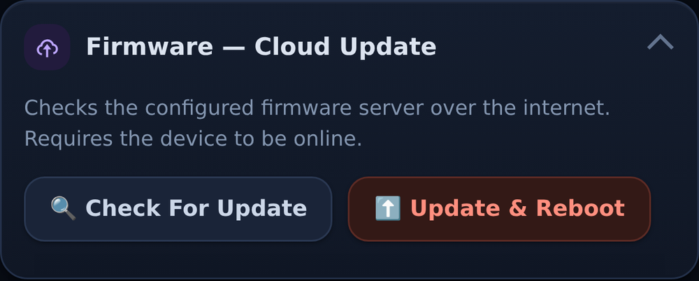
Figure 5.7 — Cloud update.
Tap Check For Update. The device asks the update service whether a newer version
exists and reports back yes or no.
If a newer version is available, tap Update & Reboot. You are asked to confirm.
The device downloads, installs and restarts itself. This normally takes one to three
minutes, after which the panel reconnects on its own.
Requires internet. Remote / IoT mode must be on and the device
online. If it is not, use the local upload method instead.
5.8 Firmware — Local Upload
Purpose: lets a technician update the device with no internet
connection at all.
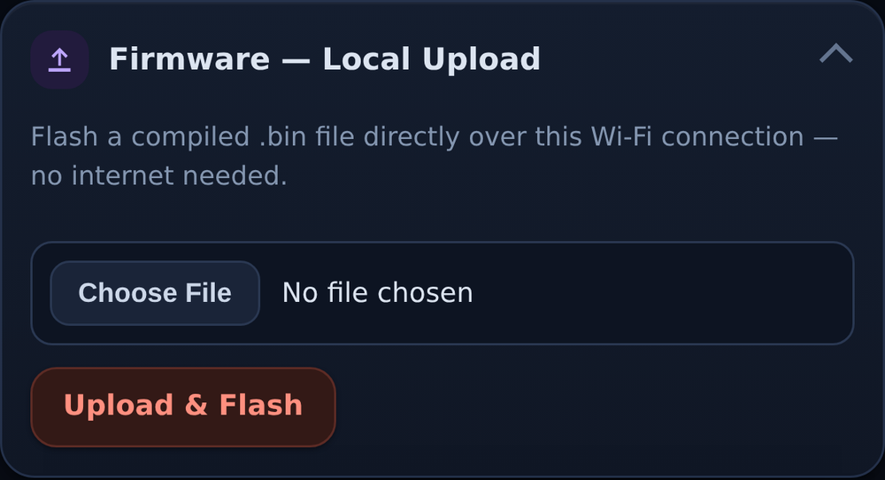
Figure 5.8 — Local upload, with its progress bar.
Select a prepared firmware file supplied by BSR, then tap Upload & Flash.
The file transfers straight over the local Wi-Fi link, with a live progress bar.
The device installs it and restarts automatically.
Nothing leaves your premises and no internet connection is used at any point.
For service use. Only ever upload a firmware file supplied by BSR
for this product. Do not interrupt the power while the progress bar is moving. If an upload
does fail, the previous firmware copy is still in the device — see section 5.15.
5.9 Motor Run Time
Purpose: shows how long the motor has actually run, day by day, and
what caused each run.
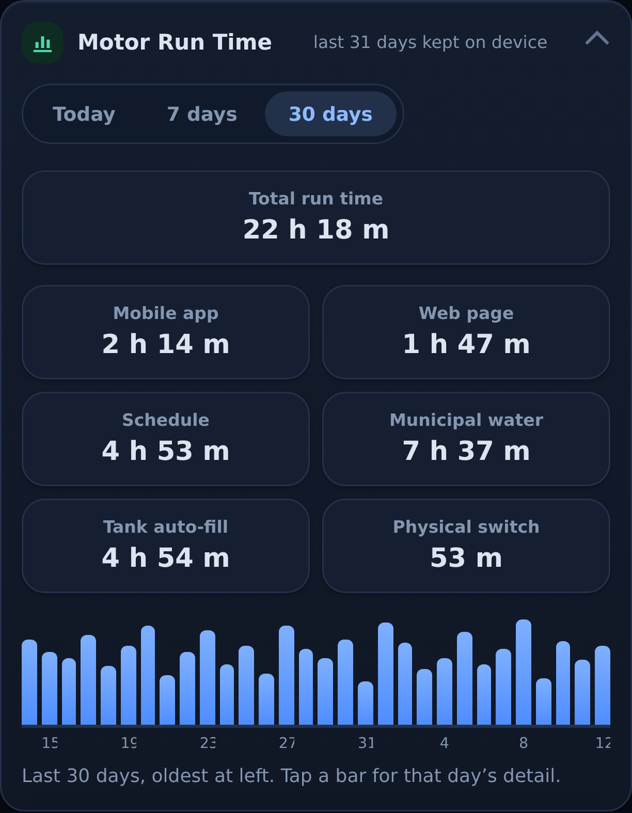
Figure 5.9 — Motor Run Time over 30 days, split by what started each run.
Element
What it shows
Today / 7 days / 30 days
Choose the period. Everything below updates to match.
Total run time
The combined motor run time for the selected period.
Source breakdown
The same total split six ways — Mobile app, Web page, Schedule, Municipal water,
Tank auto-fill and Physical switch.
Daily bar chart
One bar per day, oldest at the left, dated along the bottom. Tap any bar to see
that single day broken down by source.
The device keeps up to 31 days of daily history.
Days are split at your local midnight, so the bars line up with real calendar dates.
A run that is in progress right now is already counted in the totals.
Reading the chart. Steady bars with municipal water dominating is a
healthy pattern. A sudden climb in "Tank auto-fill" means the tank is emptying faster than
usual — a running toilet, a dripping tap or a leak. A climb in "Schedule" usually means a
schedule duration is set longer than it needs to be.
5.10 Last & Next Run
Purpose: answers "why did the motor run?" and "when will it run
next?" without any digging.
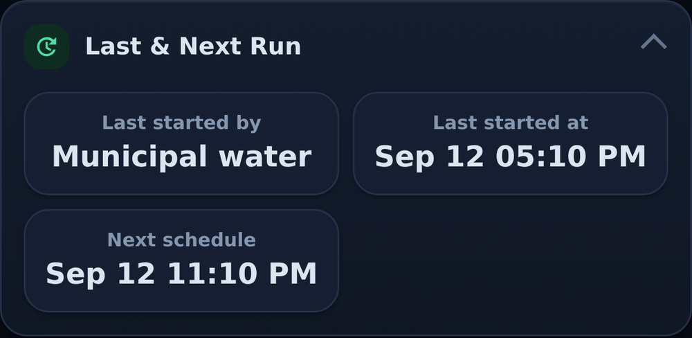
Figure 5.10 — Last & Next Run.
Last started by — which of the six sources started the most recent run.
Last started at — the date and time it began.
Next schedule — when the next stored schedule will fire, with repeating schedules
already rolled forward.
5.11 Municipal Water — Last 10 Sessions
Purpose: the record of when municipal water actually came, and how
much of it you got.
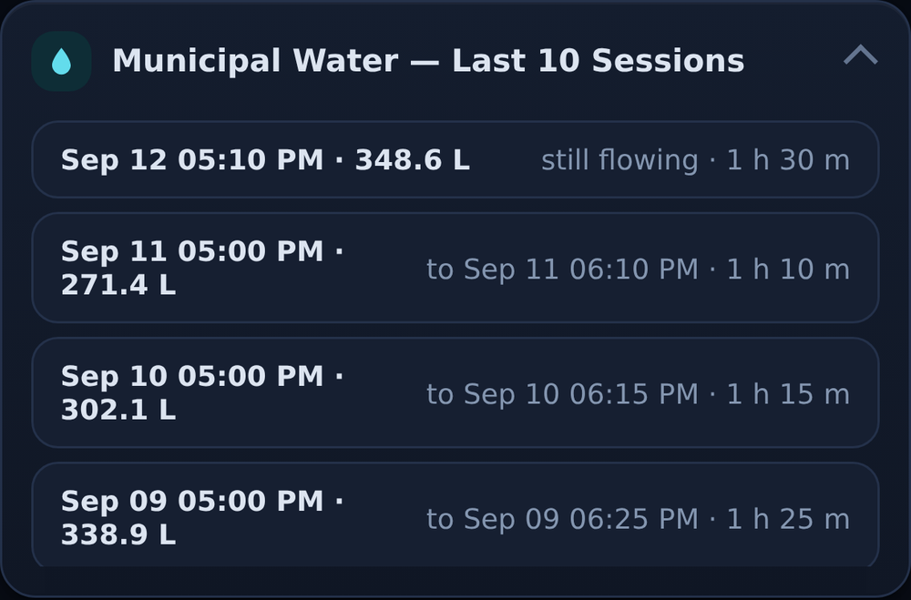
Figure 5.11 — The ten most recent supply sessions, newest first. The top entry is
still in progress.
Each row shows the date and time water arrived, the litres collected, when it stopped,
and how long the supply lasted.
A session still in progress is marked "still flowing", and its duration and litres
keep climbing while you watch.
Scroll within the list to see all ten.
Tip. Over a few weeks this list tells you the real pattern of your
municipal supply — what time it usually arrives and roughly how much it delivers. That is the
information you need to set a sensible schedule.
5.12 Reset History
Purpose: shows why the device has restarted, which is where most
diagnosis of an intermittent problem begins.
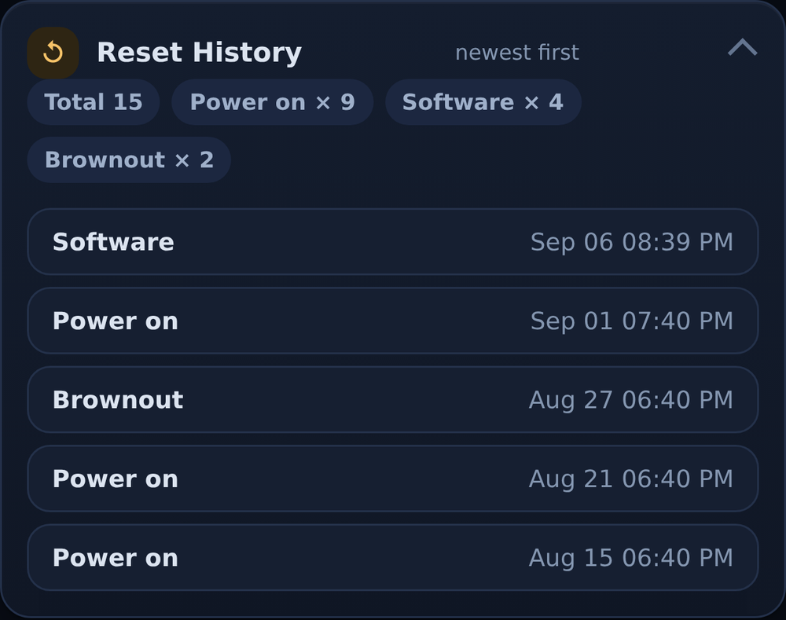
Figure 5.12 — Reset History, with lifetime totals across the top.
Reason shown
What it means
Power on
Mains power was removed and restored. A normal power cut.
Software
The device restarted itself deliberately — most often after
an update or a settings change that requires a restart.
Brownout
The supply voltage dipped too low for the device to keep
running. Commonly caused by the motor starting on a weak supply.
Watchdog / Panic
A fault was detected and the device recovered itself
automatically. Isolated entries are normal; repeated ones are worth reporting.
External
A hardware reset, for example the reset button being pressed.
The last sixteen restarts are listed, newest first, each dated and timed.
The pills across the top are lifetime totals for each cause, which keep counting
long after individual entries have scrolled off the list.
5.13 Tank Levels
Purpose: sets the two levels that drive Tank Auto Fill.
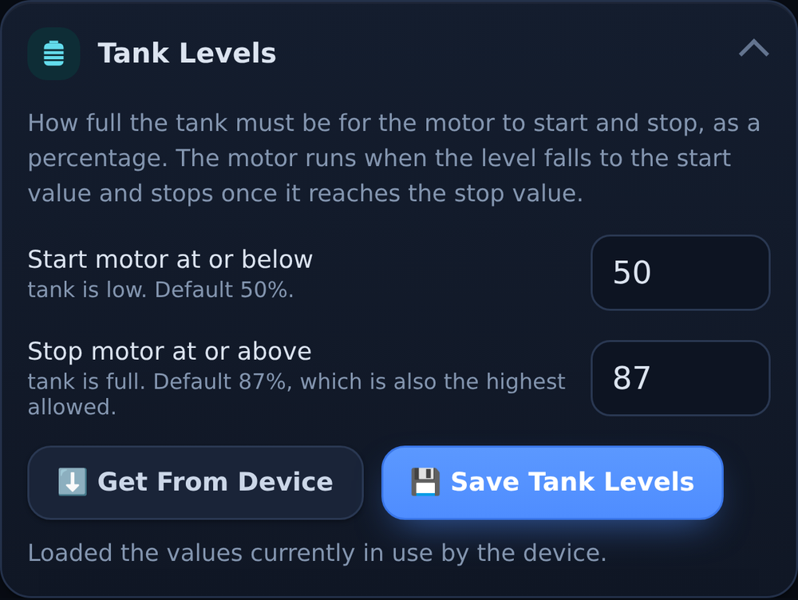
Figure 5.13 — Tank Levels.
Setting
Default
Meaning
Start motor at or below
50%
The tank counts as low at this level, and the motor starts.
Stop motor at or above
87%
The tank counts as full at this level, and the motor stops. 87% is also the highest
value the system will accept.
Get From Device loads the values currently in use, so you always edit from the
truth rather than from a guess.
Save Tank Levels writes them permanently.
The two levels must be at least five percentage points apart.
If you try to set the stop level above 87%, the panel explains why
it cannot: above roughly 88% the water surface is inside the ultrasonic probe's blind zone, so
the motor would never see the tank reach that figure and would keep running until the tank
overflowed. Section 4.6 explains how to raise this ceiling properly, by remounting the probe
higher.
5.14 Municipal Water Detection
Purpose: tunes how sensitive the system is to incoming water.
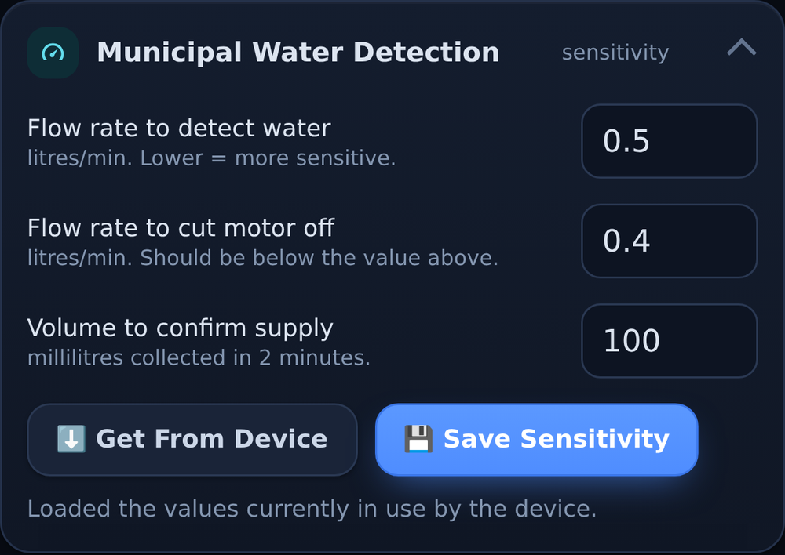
Figure 5.14 — Detection sensitivity.
Flow rate to detect water (default 0.5 L/min) — how much flow counts as water
having arrived. Lower is more sensitive.
Flow rate to cut motor off (default 0.4 L/min) — how little flow counts as the
supply having stopped. Keep this below the detection value.
Volume to confirm supply (default 100 ml) — how much water must actually be
collected in a two-minute window before a supply is accepted as genuine.
Get From Device loads the values in use; Save Sensitivity stores your changes
permanently.
Adjust only if you have a symptom. Motor starting when no real
water has arrived → raise the detection rate or the confirmation volume. A genuine weak supply
being missed → lower the detection rate.
5.15 Firmware Slots & Rollback
Purpose: shows which firmware is running, which is held in reserve,
and lets you go back one step instantly.
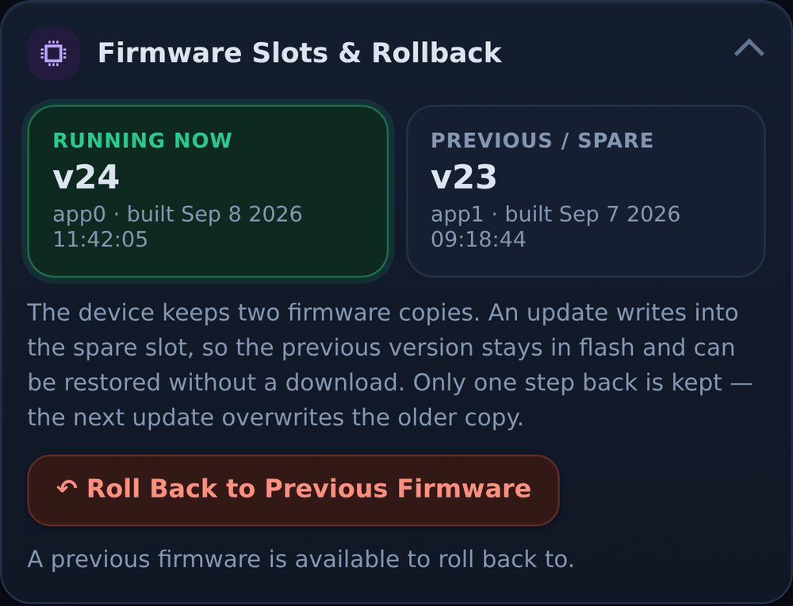
Figure 5.15 — Firmware slots. The running copy on the left, the previous copy held
in reserve on the right.
Running now — the firmware the device is using at this moment, with its version
number and the date it was built.
Previous / spare — the copy the last update replaced, still intact in the device.
Roll Back to Previous Firmware — restores that older copy on the next restart.
No download and no internet are needed, because the copy is already there. You are asked
to confirm first.
The button is disabled when there is no valid previous copy to go back to.
Only one step back is kept. The next update overwrites the older copy.
Automatic safety net. Immediately after an update, the device must
start up and confirm it is healthy. If it cannot, it reverts to the previous copy by itself —
you do not have to be there, and you do not have to notice.
5.16 Maintenance
Purpose: download, clear or completely reset the information the
device has stored.
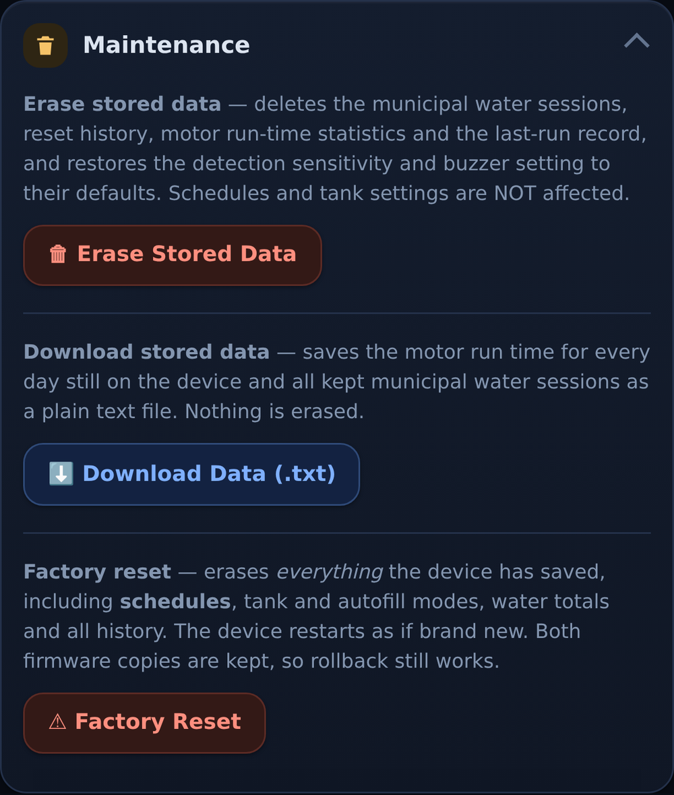
Figure 5.16 — Maintenance. Each action states exactly what it affects.
Action
Effect
Erase Stored Data
Deletes water sessions, reset history, run-time statistics and the last-run record,
and restores detection sensitivity and the buzzer setting to defaults.
Schedules and tank levels are kept.
Download Data (.txt)
Saves the daily run time for every day still held, plus all kept water sessions, as
a plain text file on your phone or laptop. Nothing is erased.
Factory Reset
Erases everything saved — schedules, modes, water totals and all history — and
restarts the device as if brand new. Both firmware copies are kept, so
rollback still works afterwards.
Both erase actions ask for confirmation and cannot be undone.
Download your data first if you want to keep it.
5.17 Diagnostics
Purpose: a running log of what the panel and the device are saying
to each other — useful when reporting a problem to support.
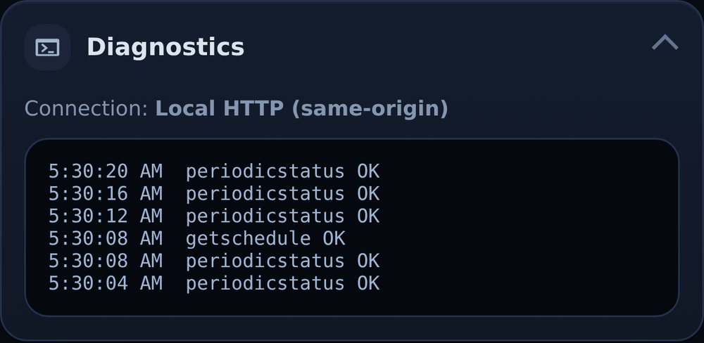
Figure 5.17 — Diagnostics.
Shows how the panel is connected to the device.
Keeps a timestamped log of recent exchanges, newest at the top.
You never need this for normal use — but if you contact support, a photograph of this
panel is often the fastest way to get to the answer.
5.18 The Tank Buzzer Alarm Banner
Purpose: tells you the roof buzzer is sounding, and offers the one
thing anybody wants from a screaming buzzer.
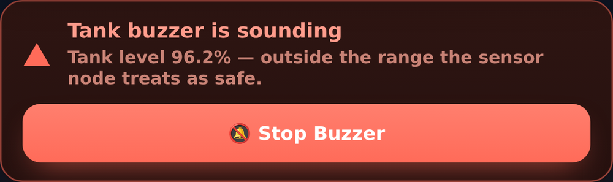
Figure 5.18 — The alarm banner. It appears only while the Sensor Node's buzzer is
actually sounding.
The banner appears at the very top of the panel, above everything else.
It states the current tank level and that it is outside the range the Sensor Node treats
as safe.
It carries exactly one button: Stop Buzzer.
It disappears by itself once the tank level returns to the normal range — and the buzzer
re-arms at the same moment, ready for the next alarm.
6. Mobile Application
The BSR AutoMotor app for Android gives you full visibility and control of
your system — at home on local Wi-Fi, or from anywhere in the world over mobile data. It covers
the same core functions as the web panel, plus the remote access that only the cloud connection
can provide.
Web panel or app — which should I use? Use the web panel
when you are at home: it needs no installation, works with no internet, and carries the deeper
settings and history. Use the app when you are away from home, or when you want push
notifications. Both talk to the same device and both show the same truth.
6.1 Live Dashboard
Reading
Shows
Why it matters
Motor status
ON / OFF
Know instantly whether the motor is running.
Municipal water status
Flowing / no water
See whether government water is in your pipe.
Water tank level
0% to 100%
Know how full the tank is without going to look.
Tank Auto Fill mode
ON / OFF
See whether automatic filling is active.
Auto Start status
ON / OFF
See whether automatic start on water arrival is active.
Total water pumped
Litres, current session
Track how much the latest supply delivered.
Temperature
°C at the controller
Monitor the motor panel environment.
Sensor Node status
Reading from the tank unit
Confirm the tank unit is alive and reporting.
6.2 Motor Control
Button
Action
Possible response
Motor ON
Turns the motor on immediately (Direct Control)
Starts — or is blocked, with a message, if Auto Start has already started the motor
on incoming municipal water.
Motor OFF
Turns the motor off and clears all automatic flags
Stops. Every automatic mode is reset cleanly.
Motor Status
Asks the device for its current state
ON or OFF confirmation.
6.3 Mode Controls
Control
Effect
Water Tank Mode ON
Enables automatic tank level control. Blocked if the motor is already running under
Auto Start or Direct Control.
Water Tank Mode OFF
Disables it. Works at any time; the motor stops if it was running because of tank mode.
Start AutoFill
The system will now run the motor automatically every time municipal water is detected.
Stop AutoFill
Water is still detected and reported, but the motor is not started automatically —
useful when you want to skip one particular supply.
6.4 Other App Functions
Stop Buzzer — silences the controller's buzzer from your phone. It resumes
automatically if the condition that raised it still exists.
Schedules — set a start time, duration and daily repeat; view all stored schedules;
delete them all with one tap. Up to five.
Set Clock — sets the device's date and time from your phone. Not needed when
Remote mode is on, since the clock syncs from the internet automatically.
Internet (IoT) toggle — turns remote access on or off, exactly as the web panel does.
Device firmware update — check for a newer version and install it, without touching
the device.
App self-update — the app checks for a newer version of itself and prompts you to
install it, so you always have the latest features without visiting a store.
Ping — a quick check that the device is alive and responding.
Water status check — confirms whether municipal water is being detected right now.
Clock reminder. If the clock has not been set, the app will show
"Please set the clock" and refuse to accept schedules. Set it once and the hardware clock
keeps it, even through power cuts.
7. Wi-Fi Extender — Bridging the Distance
Installed at: roughly midway between the Host Controller at the motor
and the Sensor Node at the tank. Role: repeats the Host Controller's own Wi-Fi network so the Sensor Node stays connected
even when it is installed a long way away.
7.1 Range Extension
Purpose: solves the single most common installation problem — the
tank being too far from the motor for a direct Wi-Fi link.
The Host Controller's local Wi-Fi network covers a limited range, typically 10–20 metres
inside a building.
If your tank is on a rooftop while the motor is on the ground floor, the direct signal may
be too weak to be reliable.
A standard household Wi-Fi range extender, placed at the midpoint, bridges the gap.
It repeats the controller's network under the same name, and the Sensor Node connects
through it without knowing the difference. No configuration is needed in either device.
Tip. Any ordinary Wi-Fi repeater will do, configured to repeat the
Host Controller's network (ESP32-WROOM). No special hardware is required. Place it where
it still has a strong signal from the controller — a repeater in a weak spot simply repeats a
weak signal.
How to tell whether you need one. Open the web panel and look at
the tank level on the Live Status card. If it regularly says "updated 2 m ago" or worse,
or drops to "no reading yet", the link is marginal and an extender will fix it.
8. Which Mode to Use & When
The system has four ways to start the motor. Understanding when each one
earns its place is how you get the most out of the installation.
8.1 Choosing a Mode
Your situation
Recommended
How to enable it
Municipal water arrives at unpredictable times and you want the motor to run every
time it does
Municipal Water Auto Start
Leave the Auto Start tile ON — it is the default. Nothing else to do.
You want the tank simply kept full, regardless of when water comes
Tank Auto Fill
Tap the Tank Auto Fill tile ON, or flip the rocker switch on the unit.
You need the motor running right now — tank cleaning, testing, an emergency
Direct Motor Control
Tap the power button on the motor card. Tap it again when you are done.
Municipal water arrives at the same time every day
Schedules
Set a repeating schedule with the start time and duration.
You are going away and want everything handled without you
Auto Start + Tank Auto Fill together
Turn both tiles ON. Between them they cover every scenario.
8.2 Mode Priority & Conflict Rules
The system has built-in rules so that two modes can never fight over the same motor. Every
refusal comes with a plain-language explanation on screen.
Situation
What happens
Why
Auto Start has already started the motor on incoming water — you tap Motor ON
Blocked, with a message
The motor is already running because of Auto Start. Starting it again would
double-trigger it.
Motor is on via Auto Start — you try to enable Tank Auto Fill
Blocked
Tank control cannot take over while a municipal water session is running the motor.
Motor is on via Direct Control — municipal water arrives
Motor stays on; buzzer sounds for a few minutes
No conflict — the motor is already doing the right thing. The alert simply tells you
water has also come.
Motor is on via Direct Control — you try to enable Tank Auto Fill
Blocked
Automatic control should not take over while you have deliberately taken manual
control.
A schedule is due — but Auto Start or Tank Auto Fill is already running the motor
The schedule does not activate
The live session takes priority. The schedule is simply re-evaluated on the next
cycle.
Tank Auto Fill is running — the Sensor Node stops reporting for 2 minutes
Motor OFF; buzzer alert; tank assumed full
A safety measure. Never run the motor without tank data — it could overflow the tank.
You set a schedule but the clock has never been set
Schedule refused, with a "set the clock" message
Schedules depend on real time. An unset clock would run the motor at the wrong hour.
You turn the motor OFF manually
Everything clears
Manual off is absolute: Auto Start, Tank Auto Fill and municipal tracking all reset
cleanly, so nothing restarts behind your back.
8.3 Three Worked Examples
A. A typical city home with an unpredictable supply
Municipal Water Auto Start: ON — catch every supply automatically.
Tank Auto Fill: ON, start 50%, stop 87% — top up from the underground sump on the
days no municipal water comes.
Schedules: none needed.
Check the Municipal Water sessions list after a fortnight to learn your real
supply pattern.
B. A supply that arrives at the same time every day
Watch the sessions list for a week to find the real arrival time and typical duration.
Set schedule #1 to that time, with a duration slightly longer than a typical session, and
Repeat ticked.
Keep Auto Start ON as well — it will catch any day the supply comes early or late.
Use Last & Next Run to confirm the next fire time is what you expected.
C. Away from home for two weeks
Turn Remote / IoT mode ON before you leave, and confirm the app connects from
mobile data while you are still at home.
Auto Start ON and Tank Auto Fill ON.
Consider muting the Device Buzzer if the unit is near a neighbour — but remember to
un-mute it when you return.
On your return, check Motor Run Time over 30 days. An unusual amount of
"Tank auto-fill" while the house was empty points to a leak.
9. Alert Reference Guide
Every alert the system can produce, what it means and what — if anything —
you should do about it.
9.1 Host Controller Buzzer
Sound
What it means
What to do
One continuous beep at start-up
The device has powered on and started
successfully.
Nothing. Normal.
Long continuous beep during normal running
Municipal water arrived while in tank mode, a schedule finished, schedules were
deleted, or the Sensor Node has gone quiet.
Open the panel or the app to see which. If it is the Sensor Node, see section 10.
Rapid short beeps
The motor has just started because the tank is low.
Nothing — this is Tank Auto Fill doing its job.
Two beeps, pause, repeating
Wi-Fi lost, or the signal to your router has
become weak.
Check your router. The system falls back to local-only operation by itself and keeps
automating.
Evenly paced on / off beeps
Municipal water was detected, or the motor was
switched on or off by command.
Nothing. This is a confirmation.
Silence
Everything is normal — or the buzzer has been muted.
Check the Device Buzzer tile if you expected a sound and got none.
9.2 Sensor Node Buzzer (at the tank)
Sound
What it means
What to do
Short beep every second
Tank level has fallen below 20%.
Check that the motor can run — supply available, Tank Auto Fill on.
Long beep every second
Tank level has risen above 88%.
The motor should be stopping. If it is not, stop it from the panel and check the
stop level setting.
Two short beeps
The Sensor Node has just started up and connected.
Nothing. Normal.
Silencing either buzzer. The controller's buzzer is silenced with
Stop Buzzer; the tank buzzer with Stop Tank Buzzer or the red alarm banner. Both
re-arm themselves — see sections 2.11 and 2.12.
9.3 On-Screen Messages
Message
Meaning and action
"Please set the clock"
Schedules cannot be accepted until the device knows the real time. Use
Config Clock, or turn Remote mode on and let it sync from the internet.
Motor ON blocked
Auto Start has already started the motor on incoming municipal water. Nothing is
wrong — the motor is already running.
Tank mode blocked
The motor is already running under Auto Start or Direct Control. Stop it first if
you really want tank control to take over.
"no reading yet" / an old tank reading age
The Sensor Node is not reaching the controller. See section 10.
Stop level above 87% refused
Above that the probe cannot see the water. Section 4.6 explains the proper fix.
"Device Not Connected" in the header
Your phone or laptop has lost the link to the controller. Check you are still on the
right Wi-Fi network.
10. Troubleshooting
The problems people actually run into, and what fixes them — in the order
worth trying.
10.1 Tank Level
Symptom
Most likely cause
What to do
Tank level shows "no reading yet"
The Sensor Node is not reporting.
Check the node has power. Check its LED: lit means Wi-Fi is down. If the tank is far
from the motor, fit a Wi-Fi extender (section 7).
Tank reading is minutes old
A marginal Wi-Fi link.
Move or add an extender. Confirm the node is within reach of the network.
Level sticks near the top and never reaches the stop value
The water surface is inside the probe's blind zone.
This is a mounting matter, not a fault. Lower the stop level, or remount the probe
higher — section 4.6.
Level jumps around
Reflections off the tank wall, or a tilted probe.
Mount the probe level, pointing straight down, away from the wall and away from the
inlet splash.
Motor stops as soon as tank mode is turned on
The tank is already above the stop level, or the node is silent so the tank is
assumed full.
Check the live level and its age on the panel.
10.2 Municipal Water Detection
Symptom
Most likely cause
What to do
Motor starts when no real supply has arrived
Detection is too sensitive for your line.
Raise Flow rate to detect water, or raise Volume to confirm supply —
section 5.14.
A genuine supply is missed
Detection is not sensitive enough for a weak
supply.
Lower Flow rate to detect water.
Motor stops and restarts repeatedly during a supply
The cut-off rate is too close to the detection rate.
Widen the gap: lower the cut-off value.
Litre count looks wrong
The flow sensor is partly blocked or misfitted.
Have the sensor inspected. It must be fitted the right way round, in a full pipe.
Very short sessions clutter the log
They do not — very short bursts are
ignored by design.
Nothing to do.
10.3 Motor and Schedules
Symptom
Most likely cause
What to do
Motor will not start from the panel
A mode conflict.
Read the message under the button, then see section 8.2.
Schedule did not run
Clock unset, or another mode had the motor.
Set the clock; check Last & Next Run to see what the device thinks is due.
Motor runs longer than the schedule duration
Another mode took over during the run — for example municipal water arrived.
Check the run-time breakdown for that day (section 5.9) to see which source is
credited.
Motor restarted by itself after a power cut
Working as designed.
The motor state is restored deliberately, so an interrupted fill continues.
Run time looks far too high
Usually a leak or a tap left open.
Look at which source is climbing. "Tank auto-fill" rising means the tank is emptying
faster than it should.
10.4 Connectivity, Power and Updates
Symptom
Most likely cause
What to do
Web panel will not load
Phone is on the wrong Wi-Fi network.
Reconnect to ESP32-WROOM and reload http://192.168.4.1
Header shows the device is not connected
The link dropped.
Wait a few seconds — the panel retries by itself. If it persists, reconnect to the
network.
App works at home but not away
Remote / IoT mode is off.
Turn it on from the panel or the app while you are still at home, and confirm remote
access works before you leave.
Repeated "Brownout" entries in Reset History
Supply voltage is dipping, usually as the motor starts.
Have an electrician check the supply and wiring at the device.
Cloud update says no newer version
You are already up to date.
Nothing to do. Check the running version under Firmware Slots.
Something looks wrong immediately after an update
—
Use Roll Back to Previous Firmware (section 5.15) and report what you saw.
Buzzer never sounds
The Device Buzzer tile is muted.
Tap the tile to un-mute. The setting survives power cuts, so it stays muted until
you change it.
Before contacting support, open the web panel and note: the
firmware version under Firmware Slots, the most recent entries in Reset History,
and a photograph of the Diagnostics panel. Those three almost always identify the problem
straight away.
11. Complete Feature Checklist
Everything the current BSR AutoMotor System does, in one list.
11.1 Host Controller
Municipal water auto start on incoming flow
Adjustable detection rate, cut-off rate and confirmation volume
3-minute minimum run time to prevent false stops
Tank auto fill with anti-chatter hysteresis
Adjustable tank start and stop levels
Stop-level safety cap matched to the probe's real range
Direct motor control, on and off
Up to five daily schedules, each repeating or one-shot
Automatic roll-forward of passed and repeating schedules
Next-schedule preview
Litre-accurate water quantity measurement
Last ten municipal water sessions logged with litres and duration
Live session marked and updated in real time
Short-burst filtering so the log stays meaningful
In-progress sessions checkpointed against power cuts
31 days of daily motor run time
Run time split six ways by what started the motor
Daily bar chart with per-day breakdown
Local-midnight day boundaries
Last-run source and time record
Four-pattern buzzer alert system
Buzzer mute and temporary silence
Remote silence of the tank buzzer, with automatic re-arm
Battery-backed real-time clock
Automatic internet time synchronisation
Manual clock setting from panel or app
Ambient temperature measurement
Always-on local Wi-Fi network
Simultaneous router connection when remote mode is on
Signal strength monitoring with automatic fallback
Automatic reconnection and recovery
Secure cloud sync for remote monitoring and control
Built-in web control panel served to any browser
Cloud firmware update
Local firmware upload over Wi-Fi
Remotely triggered firmware update
Two firmware copies with one-tap rollback
Automatic revert if an update fails to come up
Permanent, power-cut-safe settings memory
Restart cause recording, last 16 plus lifetime totals
Device uptime and restart counters
Data download as a plain text file
Selective data erase that keeps your settings
Full factory reset that keeps both firmware copies
Physical tank-mode rocker switch
Confirmation prompts on every destructive action
11.2 Sensor Node
Waterproof ultrasonic level measurement
Five-sample median filtering per reading
Configurable tank depth and probe offset
Invalid-echo detection and held-reading flagging
Reporting every five seconds
Low-level and high-level local buzzer alarms
Remote buzzer silence honoured within one cycle
Automatic buzzer re-arm if the controller goes quiet
Long-range Wi-Fi configuration
Automatic reconnection
LED status and transmission indication
Five-minute wireless update window after each restart
11.3 Web Control Panel
No installation, no account, no internet required
Phone-first single-screen motor control
Animated live motor state
One-tap mode tiles for auto start, tank fill and buzzer
Live status with reading-age display
Collapsible sections and expand-all
Schedule editor with load and save
Tank level and detection sensitivity settings
Run-time chart with tap-to-inspect days
Water session and reset history lists
Firmware slot display and rollback
Cloud update and local file upload with progress
Data download, erase and factory reset
Tank alarm banner with one-tap silence
Audible municipal-water arrival alert in the browser
Diagnostics log for support
Confirmation prompts before anything irreversible
11.4 Mobile Application
Live dashboard of every reading
Motor on / off from anywhere
Tank auto fill and auto start toggles
Schedule set, view and delete
Buzzer silence
Clock setting
Remote / IoT toggle
Device firmware update
App self-update
Ping and water status checks
Works on home Wi-Fi and on mobile data worldwide
12. Quick Start — Five Steps
From an installed system to full automation, in about ten minutes.
Step 1 — Install the Hardware
Mount the Host Controller near the motor or the electrical panel and connect the
motor through it.
Fit the flow sensor in the pipe between the municipal supply and the motor, the
right way round.
Mount the Sensor Node above the tank, pointing straight down, ideally at least
25 cm above the full mark (section 4.6).
If the tank is far from the motor, place a Wi-Fi extender midway between them.
Power everything up. The controller gives one long beep; the Sensor Node gives two short
ones once it has connected.
Step 2 — Connect Your Phone
In Wi-Fi settings, join the network named ESP32-WROOM using the password supplied
with your installation.
Open a browser and go to http://192.168.4.1
Tap the notice at the top once, to allow the page to play the water-arrival alert sound.
Confirm the header shows Device Connected.
Step 3 — Set the Clock
Open Controls and tap Config Clock.
Enter the current date and time and confirm.
Alternatively, turn on Remote / IoT mode (step 5) and let the device sync from the
internet automatically.
Schedules will not be accepted until this is done.
Step 4 — Choose Your Mode
For most homes, leave Municipal Water Auto Start ON and turn Tank Auto Fill
ON as well.
Open Tank Levels, tap Get From Device, and adjust the start and stop levels
if the defaults of 50% and 87% do not suit your tank.
If your supply arrives at a fixed time, add a repeating schedule under Schedules
and tap Save All.
Step 5 — Enable Internet (Optional but Recommended)
Open Remote / IoT Mode and switch it on. The panel may drop for a few seconds
while the device changes Wi-Fi mode — this is normal.
Install the mobile app and sign in.
Test remote access before you need it: turn Wi-Fi off on your phone, and confirm
the app still reads your device over mobile data.
Step 6 — After a Week, Look at the Data
Municipal Water sessions tells you when your supply really arrives and how much
it delivers.
Motor Run Time over 7 days tells you what is actually driving your motor.
Use both to fine-tune your schedules and your tank levels. That is where a good
installation becomes a very good one.
13. Specifications, Care & Safety
13.1 System Summary
Item
Detail
Tank level reporting interval
Every 5 seconds
Tank reading method
Ultrasonic, median of 5 samples per cycle
Default tank start / stop levels
50% / 87% (both adjustable)
Maximum permitted stop level
87%
Tank alarm band at the Sensor Node
Below 20%, above 88%
Sensor Node timeout safety cut-off
2 minutes without a reading
Default water detection rate
0.5 litres/minute (adjustable)
Default cut-off rate
0.4 litres/minute (adjustable)
Default confirmation volume
100 ml within a 2-minute window (adjustable)
Minimum motor run time on auto start
3 minutes
Schedules
Up to 5, each repeating daily or one-shot
Water session history
Last 10 sessions
Motor run-time history
31 days, split by 6 trigger sources
Restart history
Last 16 restarts, plus lifetime totals per cause
Firmware copies held
2 (running plus one step back)
Temperature measurement
Accurate to about 0.25 °C
Local network name
ESP32-WROOM
Local control panel address
http://192.168.4.1
Typical local Wi-Fi range
10–20 m indoors, extendable with a repeater
Mobile app platform
Android
13.2 Routine Care
Every month — glance at Motor Run Time. A change in the pattern is usually the
first sign of a leak or a failing float.
Every three months — check the ultrasonic probe is still clean, level and
unobstructed. Dust, cobwebs and nests all affect readings.
Every three months — check the Reset History for brownouts.
Every six months — have the flow sensor inspected for scale or debris.
Before travelling — confirm remote access works over mobile data while you are
still at home.
When a firmware update is offered — install it. Updates carry both fixes and new
features, and rollback is always available if anything looks wrong.
13.3 Safety
Electrical work must be done by a qualified electrician. The Host
Controller switches mains-powered motor equipment. Installation, wiring and any later change to
the motor circuit are jobs for a licensed professional, in line with local regulations.
Always isolate the supply at the mains before opening any enclosure or working on
the motor.
The motor can start without warning. That is the entire point of the product.
Never assume a stopped motor will stay stopped — isolate the supply before any mechanical
work on the pump, the pipework or the tank.
Keep the enclosure closed and dry. The Host Controller is not designed for direct
exposure to water or weather.
Protect against dry running. This system controls when the motor runs, but it is
not a substitute for the dry-run protection your pump itself should have.
Mount the Sensor Node securely. A probe that falls into the tank stops measuring
and contaminates your water.
Do not modify the device or install firmware from any source other than BSR.
Supervise tank access. Open water tanks are a drowning hazard, particularly to
children.
13.4 What the System Does Not Do
Stated plainly, so expectations are right from day one:
It does not measure water quality — only quantity and level.
It cannot measure the very top of the tank unless the probe is mounted high enough
(section 4.6).
It cannot create water pressure. If your supply is weak, the system will detect and
report that, but it cannot fix it.
It does not replace your pump's own overload or dry-run protection.
It will not run the motor during a mains power cut. When power returns, it restores
exactly the state it was in.
14. Glossary
Term
Meaning
Auto Start / AutoFill
The mode that starts the motor automatically
when municipal water is detected in the supply pipe.
Tank Auto Fill
The mode that starts and stops the motor based on how
full the tank is.
Direct Motor Control
Turning the motor on or off yourself, overriding
the automatic modes.
Hysteresis / dead band
The deliberate gap between the level that
starts the motor and the level that stops it, which prevents rapid on-off switching.
Blind zone
The minimum distance an ultrasonic probe can measure.
Anything closer than that returns no usable reading.
Median filtering
Taking several readings and using the middle value,
which discards occasional wild results.
Flow rate
How fast water is moving through the pipe, in litres per
minute.
Session
One continuous municipal water supply, from the moment it is
detected to the moment it stops.
Trigger source
What caused the motor to start: mobile app, web page,
schedule, municipal water, tank auto-fill or the physical switch.
Firmware
The software running inside the device itself.
Firmware slot
One of the two places in the device where a firmware
copy is kept.
Rollback
Restoring the previous firmware copy.
OTA
"Over the air" — updating the device wirelessly, with no cable and
no physical access.
Brownout
A dip in supply voltage severe enough to restart the device.
Uptime
How long the device has been running since its last restart.
Local Wi-Fi network
The network the Host Controller creates itself.
It exists whether or not you have internet.
Remote / IoT mode
The setting that connects the device to your router
and the cloud, enabling control from outside your home.
Wi-Fi extender / repeater
A device that rebroadcasts a Wi-Fi network
to cover a greater distance.